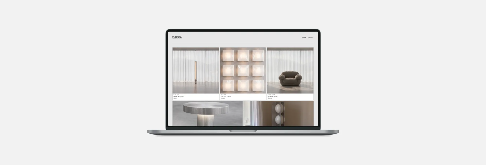
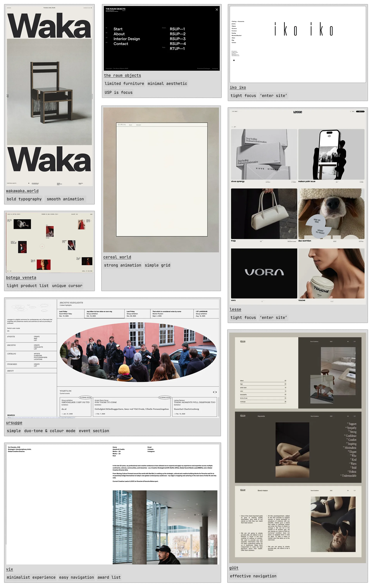
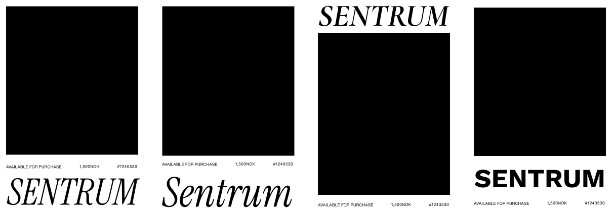
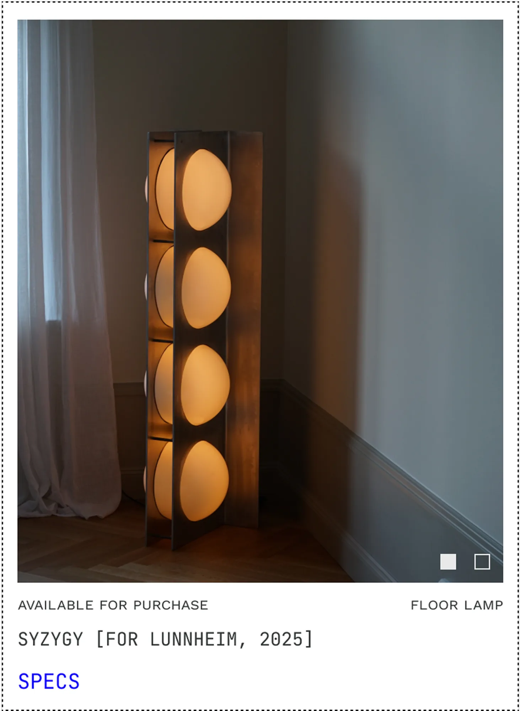
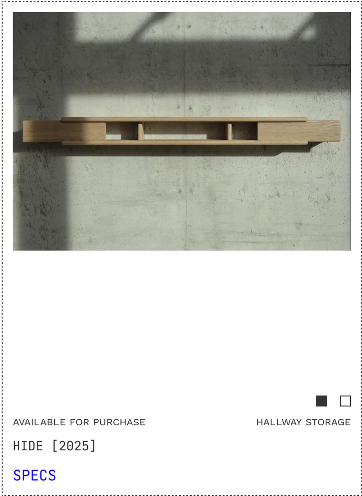
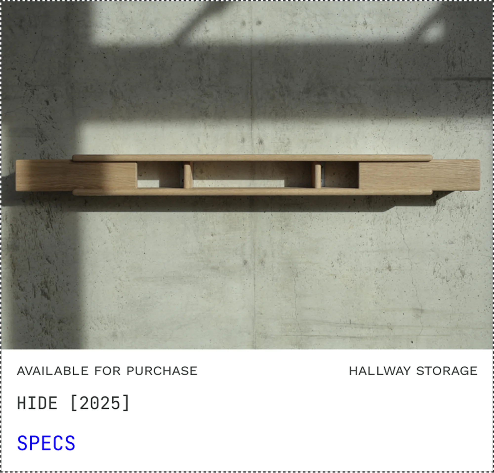
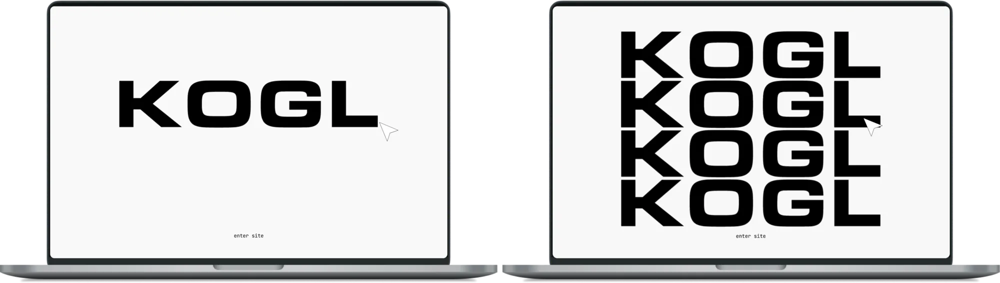
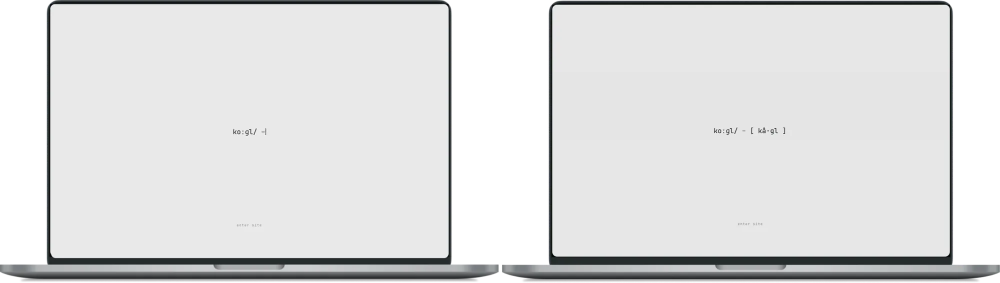
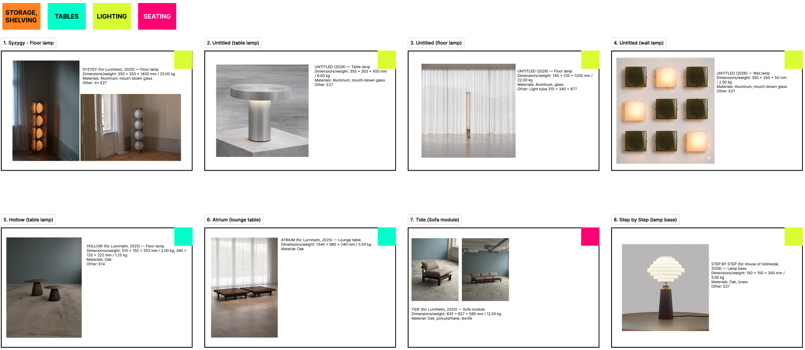

KOGL: Establishing Web Presence
Kogl, an emerging furniture design studio based in Oslo, sought a digital presence that reflected the ambition and quality of its work. While the studio had a growing number of products and an existing outreach strategy, its visual identity lacked a digital presence capable of attracting prospective customers, manufacturers, and design collaborators.

Ask
Design and launch a minimalist product listing site that lays the foundation for an eventual e-commerce website, showcases Kogl's furniture collection, communicates the studio's identity, and positions it as a desirable partner for manufacturers in time for Milan Design Week 2026.
Highlight/s
The client expressed slight frustration that people often struggled with how to pronounce the brand name (KOGL), particularly at international events. As the site needed to launch ahead of Milan Design Week, I created a phonetic animation that acted as a unique landing page, giving every visitor the pronunciation and building slight anticipation before entering the site.
Contribution
- Led UX, content strategy, and visual design of Kogl's e-commerce site, from discovery and concept through to design and implementation.
- Translated the brand positioning into a structured digital experience, supported by a scalable design system.
- Set the typography, spacing, and grid system used across the site.
- Worked closely with the developer and client through frequent check-ins to meet a quick turnaround.
Outcome
Designed a minimalist product listing site that places the furniture at the centre of the experience. The site combines streamlined navigation with a curated project index to showcase the studio's growing collection of furniture and lighting designs. A dedicated studio section introduces the founders, their design philosophy, and exhibition / press history.
Project media
Here are some key artefacts from the project, with captions explaining each of them.







